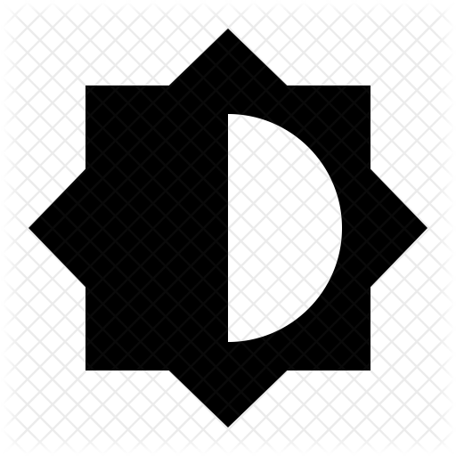

Bevor Du Dich als Fotograf in den Wald begibst oder Models zum Shooting einladen kannst, sollten Dir die elementarsten technischen Grundlagen der Fotografie bekannt sein. Was ist die Blende?
Wozu dient der ISO-Wert? Wann wende ich welche Belichtungszeit an? Wie stehen diese drei grundlegenden Faktoren miteinander in Beziehung und welche Auswirkungen haben sie auf die Belichtung
und die Bildgestaltung? Die folgenden drei Beiträge Blende, Zeit und ISO geben Antworten auf diese Fragen:
Blende
Belichtungszeit
ISO-Wert
Blende
Einer der wichtigsten Faktoren um ein Foto wunschgemäß zu gestalten ist die Wahl der Blende. Mit ihrer Hilfe kannst Du nicht nur bestimmen, wie viel Licht auf den Sensor fällt.
Sie hat auch einen großen Einfluss auf die Schärfentiefe des Bildes. Was dies in der Praxis bedeutet, wie man die richtige Einstellung für die entsprechende Situation findet
und welche anderen Faktoren mit der Blende zusammenwirken, möchte ich auf dieser Seite verdeutlichen.
Allgemeines zur Schärfentiefe
Sicher kennst Du auch diese schönen Porträtaufnahmen, wo der Hintergrund verschwommen und die abgebildete Person scharf zu sehen ist. In solchen Bildern wird mit einer sehr geringen Schärfentiefe gearbeitet.
Die Schärfentiefe bestimmt den Bereich in Deinem Motiv, der scharf zu sehen ist. Er kann sich über die gesamte Tiefe des Bildes (vom Motiv im Vordergrund bis weit in den Hintergrund,
z.B. bei Landschaftsaufnahmen) erstrecken (= hohe Schärfentiefe). Er kann sich allerdings wie am Beispiel des Portraits auch nur auf einen bestimmten Ausschnitt konzentrieren
während alles andere in Unschärfe verschwimmt (= geringe Schärfentiefe). Bei letzterem Fall ist es enorm wichtig, richtig zu fokussieren, daher, die Kamera auf das Hauptmotiv im Bild scharf zu stellen.
Die subjektiv empfundene Qualität dieser Unschärfe-Bereiche im Bild wird oft auch als Bokeh bezeichnet – ob das Bokeh eher schön oder eher schlecht aussieht, hängt stark vom verwendeten Objektiv ab.
Blende und Schärfentiefe
Die Blende ist einer der Faktoren, die einen großen Einfluss auf den Anteil an Schärfe in Deinem Bild hat. Generell gilt folgendes: Je weiter Du die Blende öffnest,
desto weniger Schärfentiefe/mehr Unschärfe bekommst Du in Dein Bild. Je weiter Du die Blende schließt, desto mehr Schärfentiefe/weniger Unschärfe hast Du letztendlich im Bild. Du kannst das einmal ausprobieren,
indem Du mit unterschiedlichen Werten für die Blende (meist Modus Av oder A an Deiner Kamera) bei gleicher Brennweite und konstanten Abstand zum Motiv ein paar Fotos knipst.
Typische Werte für eine weit offene Blende sind z.B. f2.8 oder f3.2, für eine weit geschlossene Blende z.B. f18 oder f22. Das Ergebnis könnte in etwa so aussehen, wie die zwei Beispielbilder links.
Auf diese Weise bieten sich ganz unterschiedliche Möglichkeiten, um Dein Bild bewusst zu gestalten. Je nachdem, was Du fotografieren möchtest und wie viel Licht Dir zur Verfügung steht,
sind weiter geöffnete oder geschlossene Blendeneinstellungen zu verwenden.
Blende und Belichtung
Die Blende hat neben dem Einfluss auf die Schärfentiefe jedoch auch enorme Auswirkungen auf die Belichtung des Motives. Wenn Du wie im oberen Absatz beschrieben,
versucht hast, ein Motiv bei weit geschlossener Blende (z.B. f22) zu fotografieren, könnte es passiert sein, dass die Aufnahme unterbelichtet oder verwackelt ist.
Der Grund dafür ist folgender: Je weiter Du die Blende schließt, desto weniger Licht fällt nämlich auf den Sensor der Kamera. Um das Bild dennoch gut zu belichten,
müssen andere Faktoren, die einen Einfluss auf die Belichtung haben, das fehlende Licht kompensieren. Dies kann z.B. ein höherer ISO-Wert oder eine längere Verschlusszeit sein.
Objektive, an denen man die Blende sehr weit öffnen kann sind daher sehr beliebt, um ohne Stativ und Blitz selbst bei eher wenig Licht noch gute Bilder zu fotografieren, wie das Foto rechts veranschaulicht.
Festbrennweiten* sind dafür besonders gut geeignet, da sich an ihnen baubedingt die Blende meist sehr weit öffnen lässt – sie sind somit besonders lichtstark.
Offenblenden-Werte von 1.8 oder auch 1.2 sind an Festbrennweiten möglich. Besonders beliebt sind Festbrennweiten von 50mm Brennweite. Einsteigerfreundliche Modelle gibt es bereits ab ca. 100€,
sowohl für Canon, Nikon oder andere Systeme.
Wirkung der Blende in Abhängigkeit von Brennweite und Abstand zum Motiv
Der Einfluss der Blendenzahl auf die Tiefenschärfe kann durch zwei Faktoren deutlich variieren. Dabei hat zum einen die Brennweite einen direkten Einfluss auf die Wirkung der Blende.
Fotografiere mal ein Motiv Deiner Wahl bei konstanter Blendenvorwahl (ca. f4.0) im Weitwinkel (ca. 20-25mm oder weniger) und im Normal- bis Telebereich (ab 50mm aufwärts).
Bei einem Vergleich wirst Du feststellen, dass sich im Foto mit 50mm Brennweite wesentlich mehr Unschärfe befinden wird. Je weiter Du also in den Telebereich kommst,
desto größer ist der Einfluss der Blende auf den Schärfebereich. Dieser Einfluss kann noch vergrößert/verkleinert werden, indem Du das Motiv näher/weiter weg fotografierst.
Belichtungszeit
Eine weitere wichtige Einstellung zur Bildgestaltung und Belichtung ist die Belichtungszeit oder auch Verschlusszeit. Sie bestimmt, wie lange Licht auf den Sensor der Kamera fällt bzw. wie lange die Blende geöffnet ist.
Grundlegendes
Doch was gilt gemeinhin als kurze, und was als lange Verschlusszeit? Nun, in der Regel bezeichnet man Belichtungszeiten kleiner als 1/60 Sek. als kurze Verschlusszeiten (z.B. 1/200 Sek., 1/1000 Sek. oder kürzer),
alles darüber (z.B. 1/30 Sek. bis hin zu 1 oder mehreren Sekunden) als lange Verschlusszeiten. Analog zur Blendenöffnung (je weiter offen desto mehr Licht kommt auf den Sensor) verhält es sich auch mit der Belichtungszeit:
je länger die Verschlusszeit eingestellt ist, desto mehr Licht fällt am Ende auf den Sensor der Kamera.
Umgang & Gestaltung mit langen Belichtungszeiten
Sicher kennst Du das wenn Du ohne Blitz und Stativ fotografieren möchtest: einmal während der Aufnahme die Kamera nicht still gehalten und schon ist das Bild leicht bis stark verwackelt.
Diese Unschärfe entsteht bei zu langen Belichtungszeiten aus dem Stand heraus hervorgerufen durch ungünstige Lichtsituationen, z.B. in der Dämmerung. Wenn Du im Automatikmodus fotografierst,
versucht die Kamera dies zuerst mit einer Öffnung der Blende oder einer Erhöhung des ISO Wertes auszugleichen. Reicht auch das nicht aus, um das Bild korrekt zu belichten, wird die Verschlusszeit
verlängert und es kommt zu Verwackelungen. Ab welcher Verschlusszeit Du nicht mehr aus der Hand fotografieren kannst hängt neben dem vorhandenen Licht und der verwendeten Brennweite davon ab, wie ruhig
Du die Kamera halten kannst und ggf. von einem eventuell vorhandenen Bildstabilisator am Objektiv/der Kamera. Jedoch kann man hier den bereits erwähnten Wert von 1/60 Sek. als Grenzwert nehmen. Werte von 1/50 Sek.
oder 1/30 Sek. sind bereits kritisch. Probiere es einfach einmal aus, indem Du die Zeitvorwahl (Tv oder Sv/S) Deiner Kamera benutzt.
Doch halt, wozu können lange Verschlusszeiten denn dann gut sein, außer unter dem Nachteil der Verwackelungsgefahr mehr Licht auf den Sensor zu kriegen? Zu einer ganzen Menge!
Mit ihr ergeben sich, richtig eingesetzt, einige tolle Gestaltungsmöglichkeiten. Ausgestattet mit Stativ und Fernauslöser kannst Du beispielsweise tolle Aufnahmen eines Stadtpanoramas bei Nacht einfangen.
Solide Stative für den Einstieg sind z.B. das Hama Fotostativ Action 165 3D* oder das AmazonBasics Stativ*. Bei derartigen Aufnahmen sind lange Belichtungszeiten unumgänglich, um die einmalige Lichtstimmung einzufangen.
Bewegungen von Motiven können durch längere Belichtungszeiten in das Bild transportiert werden. Denke an Fotos von Wasserfällen, wo das Wasser als eine Art Schleier in Erscheinung tritt oder an laufende Passanten,
die ab einer gewissen Belichtungszeit geisterhaft verschwimmen. Dies sind natürlich nur einige sehr klassische Beispiele. Deiner Kreativität und Experimentierfreude sind aber keine Grenzen gesetzt.
Probiere verschiedene Sachen aus, um ein Gefühl für die Gestaltungsmöglichkeiten zu bekommen. Wenn Du dich für das Thema Langzeitbelichtung weitergehend interessierst, dann empfehle ich
Dir meinen recht umfangreichen Blogartikel darüber – dort dürfte so gut wie alles darüber zu finden sein, was man Anfangs wissen sollte.
Umgang & Gestaltung mit kurzen Belichtungszeiten
Im Gegensatz zu langen Belichtungszeiten ist der Umgang mit kurzen Belichtungszeiten eher unproblematisch (vorausgesetzt es ist genügend Licht vorhanden). Verwackelungen sind hier in der Regel völlig ausgeschlossen.
Kurze bis sehr kurze Verschlusszeiten werden z.B. in der Sportfotografie eingesetzt, um Bewegungen im Bild einzufrieren. Dieses Gestaltungsmittel eröffnet dem Fotografen ebenfalls eine Reihe kreativer
Möglichkeiten zur Bildgestaltung. Besonders bei extrem kurzen Verschlusszeiten lassen sich Momente festhalten, die mit bloßem Auge gar nicht erfassbar sind. Wasser beispielsweise kann mit kurzen
Belichtungszeiten ebenso spannend eingefangen werden, wie mit langen, wie das Bild links eindrucksvoll unter Beweis stellt. Mit Wasser sollten die Ideen natürlich nicht aufhören. „Einfrieren“ lässt sich mit
ausreichend Licht eigentlich so gut wie alles, was sich bewegt! Viel Spaß bei der Motivsuche!
ISO-Wert
Sicher hast Du an Deiner Kamera schon mal die Einstellung „ISO“ entdeckt, aber nie so recht gewusst, wozu diese eigentlich gut ist. Nun, neben Blende und Verschlusszeit hat der ISO Wert ebenfalls einen
großen Einfluss auf die Belichtung des Bildes. Er steuert die Empfindlichkeit des Sensors in der Kamera.
Der „Sehnerv der Kamera“
Um dies zu veranschaulichen, stellen wir uns den Sensor der Kamera mal als unsere Augen vor. Jeder kennt das: wenn Du abends das Licht ausschaltest, dauert es eine Weile, bis sich Deine Augen an die Dunkelheit gewöhnt haben.
Wenn Du nun das Licht wieder anschaltest, erscheint eine mitunter harmlose Tischlampe für kurze Zeit extrem grell und man muss die Augen zusammen kneifen bis man sich daran wieder gewöhnt hat.
Der Grund dafür ist, dass unsere Sehnerven die Lichtempfindlichkeit je nach Helligkeit entsprechend justieren. Und genau so verhält es sich mit dem Sensor der Kamera, nur dass wir dort dessen
Empfindlichkeit via ISO-Einstellung nach Belieben regeln können.
Die Empfindlichkeit des „Sehnervs der Kamera“, des Sensors also, wird dabei in konkreten Zahlen ausgedrückt und eingestellt. ISO-Werte von 200, 100 oder weniger stehen dabei für eine geringe Lichtempfindlichkeit.
Derartige Werte sind bestens geeignet, um in Situationen mit ausreichend Licht zu fotografieren, beispielsweise an einem wolkenlosen, sonnigen Tag im Freien. Doch wie der Zufall es so will,
ziehen auf einmal mächtig viele große dunkle Wolken vor die Sonne. Um das Bild nun mit ISO 100 noch korrekt belichten zu können, müsstest Du entweder die Blende weiter öffnen, oder die
Belichtungszeit möglicherweise so lang einstellen, dass Du ein Stativ benötigst, um verwackelungsfreie Bilder zu bekommen. Wenn beides nicht in Frage kommt, kannst Du den ISO Wert erhöhen,
um dem entgegen zu wirken. Denn er sorgt für einen erweiterten Spielraum für das Einstellen unterschiedlicher Zeit-Blenden-Kombinationen. Je höher Du den ISO Wert stellst, desto empfindlicher
reagiert der Sensor auf einfallendes Licht. Werte von 400 bis 800 werden dabei in der Regel für bewölkte Tage oder in Innenräumen, wo nicht viel Licht vorhanden ist, verwendet.
Werte ab 1600 können ihre Anwendung bei schlechten Lichtverhältnissen finden, wo kein Blitz verwendet werden kann oder darf (z.B. bei der Eventfotografie auf Konzerten, in Theatern usw.).
Das Fotografieren mit ausschließlich vor Ort vorhandenem Licht hat sogar einen eigenen Bereich in der Fotografie bekommen – die Available Light Fotografie – hier benötigt man recht oft Kameras,
die auch bei hohen ISO-Werten noch brauchbare Bilder produzieren.
ISO-Werte und Bildrauschen
Das klingt fast zu schön um wahr zu sein: Verschlusszeit zu lang? ISO Wert rauf! Mit weit geschlossener Blende bei schummrigem Licht fotografieren? ISO Wert noch höher! Leider hat die Sache wie so oft aber
einen kleinen Haken. Abhängig vom jeweiligen Kamera-Modell verschlechtert sich mit steigendem ISO Wert die Bildqualität teilweise erheblich. Es kommt zu dem sogenannten Bildrauschen und dem Verlust von Details
in der Aufnahme. Viele Kompaktkameras und ältere Bridge-Kameras rauschen schon deutlich sichtbar ab ISO 800.
Einsatz des ISO Wertes – Was tun wenn’s dunkel wird?
Nun lässt es sich nicht immer vermeiden mit hohem ISO Wert zu hantieren. Ein Beispiel: Du fotografierst mit offener Blende bei ISO 800 ohne Stativ und ohne Blitz auf einer Party.
Du benötigst daher eine möglichst kurze Verschlusszeit, die nicht geringer als ca. 1/40 sein sollte. Wenn die Verschlusszeit nun so lang eingestellt werden muss, dass Deine Bilder verwackeln,
bringt Dir das geringste Bildrauschen nichts. Nun kannst Du den ISO Wert ruhig auf 1600 oder gar 3200 anheben und im Gegensatz die Verschlusszeit wieder verkürzen.
Besser verrauschte Bilder als total verwackelte! Natürlich musst Du je nach Lichtsituation versuchen, den besten Kompromiss zu finden. Und manchmal bringt Dir auch die beste Kamera nichts mehr.
Denn wo kein Licht ist, kann auch kein Bild entstehen. Du erinnerst dich an den Vergleich mit dem Auge? Wo keinerlei Licht ist, können wir auch nichts sehen. In dem Fall bleibt einem dann nichts anderes übrig,
als die Kamera wegzustecken oder einen Blitz zu verwenden.
Exkurs: ISO und RAW
Manche Bridge-Kameras und so gut wie alle Spiegelreflexkameras bieten Dir die Möglichkeit, Deine Fotos im Rohdatenformat, dem sogenannten RAW-Format auszulesen.
Diese RAW-Daten sind anders ausgedrückt die „digitalen Negative“ Deiner Bilder. Sie bleiben anders als die von Deiner Kamera erstellten JPEGs vollkommen unbearbeitet.
Bei der Umwandlung Deiner Bilder in JPEGs bearbeitet die Software in der Kamera die Bilder nämlich – es wird Helligkeit, Kontrast und Sättigung hinzugefügt sowie Bildrauschen mit diversen Filtern entfernt.
Leider arbeiten letztere oft sehr stark und Bildinformationen werden unwiderruflich zerstört. Nicht so beim RAW-Format. Damit hast Du einerseits die Möglichkeit durch spätere
Bildbearbeitung am Computer mit spezieller Rauschfilter-Software wesentlich mehr Bildrauschen zu entfernen und andererseits mehr Details und Schärfe in den Fotos zu bewahren.
Das RAW-Format bietet noch weitere Vorteile, ist aber arbeitsintensiv und sehr speicherhungrig (bis zu 40MB pro Bild).
Darüber hinaus behandle ich in dieser Rubrik zwei weitere Grundlagen-Themen.
Der Beitrag zum Thema „Richtig belichten“ erklärt Dir die unterschiedlichen Belichtungs-Messmethoden Deiner Kamera und wann Du welche am besten einsetzen solltest.
Auch die Belichtungskorrektur wird anhand anschaulicher Beispiele leicht verständlich erklärt. Der letzte Beitrag beschäftigt sich mit den Grundlagen der Bildbearbeitung
Deiner Fotos und vermittelt die wichtigsten Bearbeitungsschritte bei der digitalen Nachbearbeitung.

Richtig belichten
Bildbearbeitung
Richtig belichten – Messmethoden und Belichtungskorrektur
Sobald wir an unserer Kamera den Auslöser antippen, laufen in ihr sehr komplexe Berechnungsvorgänge ab, die bestimmen, wie das Bild am besten belichtet werden kann.
Im Vollautomatikmodus entscheidet die Kamera anhand dieser Berechnungen über die Wahl von Blende, Verschlusszeit und ISO Wert und nimmt somit auch gehörigen Einfluss auf die Bildgestaltung.
Doch auch wenn Du z.B. im Modus Blendenvorwahl mit fest eingestelltem ISO-Wert arbeitest, berechnet die Kamera trotzdem fleißig die ihrer Meinung nach optimale Belichtung
und wählt die entsprechend günstige Verschlusszeit, bei der Zeitvorwahl dementsprechend den passenden Blendenwert.
Messmethoden der Kamera
Diese Belichtungsmessungen der Kamera sind über die Jahre extrem ausgefeilt worden. Aber selbst die beste Technik kann die optimale oder für das Motiv angemessenste Belichtung nicht immer
fehlerfrei berechnen. Aus diesem Grund kann man an der Kamera unterschiedliche Belichtungsmodi für unterschiedliche Bild – und Belichtungssituationen wählen. Anhand dieser Wahl entscheidet man grundsätzlich,
welchen Bildanteil die Kamera bei ihrer Belichtungsmessung mit einbeziehen soll. Meist stehen die Mehrfeldmessung, die Integral- oder mittenbetonte Messung, die Selektivmessung und die Spotmessung zur Verfügung.
Die Reihenfolge der Aufzählung geht hier vom am wenigsten zum am meisten selektiven Messmodus. Während die Mehrfeldmessung nahezu das gesamte Bild mit in die Messung einbezieht,
konzentriert sich die Kamera bei der Integralmessung nur auf die Bildmitte und ignoriert den Rest des Bildes. Die Selektivmessung berücksichtigt nur einen kleinen Teil der Bildmitte
und die Spotmessung ausschließlich einen Bildpunkt.
Anwendung der Messmethoden
Diese unterschiedlichen Methoden können für verschiedenste Lichtsituationen vorteilhaft sein. In vielen Fällen ist die Mehrfeldmessung die richtige Wahl. Vor allem bei gleichmäßig beleuchteten
Bildsituationen wird es hier zu den wenigsten Problemen kommen. Doch was ist mit sehr kontrastreichen Begebenheiten? Wenn sich Dein Hauptmotiv im Schatten befindet/sehr dunkel ist
und es vor einem hellen Hintergrund zu sehen ist, wird die Mehrfeldmessung problematisch. Sie wiegt die hellen Bereiche gegen die dunkeln auf, was zur Folge haben kann,
dass das dunkle Hauptmotiv auf dem Foto unterbelichtet sein wird. Greife in so einem Fall besser zur Integral- oder Selektivmessung. Die beiden Beispielbilder illustrieren die enormen Unterschiede,
die durch unterschiedliche Messmodi entstehen können. Die grün markeierten Bereiche markieren die Bildbereiche, die in die Belichtungsmessung der Kamera mit einbezogen worden.
Belichtungskorrektur
Eine weitere, sehr einfache Methode, mögliche fehlerhafte Berechnungen der Kamera zu korrigieren, ist die Belichtungskorrektur. So kannst Du die fehlerhafte Belichtung der Mehrfeldmessung im oberen Beispielbild
auch anders berichtigen. Statt gleich den Messmodus zu ändern, sagst Du der Kamera einfach: „Das Bild ist mir zu dunkel, bitte belichte es intensiver!“ Dies bewerkstelligst Du mithilfe der Belichtungskorrektur,
die Du mit fest einstellbaren Lichtwerten (meist in 1/3EV-Schritten angegeben) nach oben oder unten justierst. Einstellungen in den Minus-Bereich sagen der Kamera: „Das Bild ist zu hell, mache es dunkler!“,
Einstellungen in den Plusbereich hingegen haben ein helleres Bild zur Folge. Letztere Wahl wäre unter anderem auf das obere Beispielbild anzuwenden. Wie weit Du die Einstellungen
dabei in den Plus- oder Minusbereich regeln solltest, hängt von der Belichtungssituation ab. Je kontrastreicher und extremer die Lichtunterschiede im Bild, desto intensiver kannst oder musst
Du sogar in die Belichtungsautomatik der Kamera eingreifen.
Aber auch eher kontrastlose, jedoch durchweg sehr helle oder sehr dunkle Bilder bereiten der Kameraautomatik öfter Probleme. Beispiel? Ein schwarzes Motiv vor dunklem Hintergrund wird die Belichtung der
Kamera in den meisten Fällen als zu dunkel interpretieren und entsprechend intensiver belichten wollen. Doch leider meint sie es zu gut und überbelichtet das Bild. Wenn Du mittels Belichtungskorrektur in den
Minusbereich nicht eingreifst, würde das Bild zu hell/grau werden. Analog dazu werden durchgängig helle Bilder ohne Belichtungskorrektur in den Plusbereich unterbelichtet/zu dunkel (z.B. eine Schneelandschaft
an einem sonnigen Tag).
Um diese Vorgänge besser verstehen zu können, solltest Du die besprochenen Messmethoden mit unterschiedlichen Belichtungssituationen einfach einmal ausprobieren. So wirst Du schnell ein Gefühl dafür bekommen,
in welcher Situation Du die Korrektur wie stark verwenden kannst oder ob du ein anderes Messverfahren heranziehen solltest.
Grundlagen der Bildbearbeitung
Auch wenn man mit der Nachbearbeitung am Computer aus einem schlechten Foto kein wunderschönes Bild zaubern kann, so ist es doch möglich, aus einem gut aufgenommenen ein fantastisches Foto zu kreieren.
Elementare Bildbearbeitungsschritte wie Rauschreduzierung, Bildausschnitt wählen, Helligkeit & Kontrast oder Schärfen können dabei helfen. Je früher man sich mit dem Thema Bildbearbeitung auseinandersetzt,
desto besser. Denn auch wie beim eigentlichen Fotografieren wird man hier durch häufiges Üben immer versierter im Umgang mit der „digitalen Dunkelkammer“. Ich möchte auf dieser Seite erstes Basiswissen vermitteln,
dass den Einstieg entschieden erleichtert. Darüber hinaus stelle ich geeignete Bildbearbeitungsprogramme kurz vor.
Exkurs zu Beginn: Das RAW-Format in der Bildbearbeitung
Wenn Du von vornherein höhere Ansprüche an das Thema Bildbearbeitung stellst, solltest Du womöglich gleich damit anfangen, im RAW-Format zu Fotografieren. Statt als komprimiertes und von der Kamera bereits
bearbeitetes JPEG-Bild, wird dein Foto in einem speziellen Rohdatenformat unbearbeitet auf der Speicherkarte abgelegt. Alle Bearbeitungsschritte liegen dann zu 100% in Deiner Hand und Du hast die volle
Kontrolle bei der digitalen Bildbearbeitung. Auch lassen sich Tiefen und Lichter in höherem Umfang korrigieren und Rauschen effektiver entfernen. Das Format ist allerdings sehr groß (ca. 30MB pro Foto) und
dementsprechend speicherhungrig. Wer sich aufs Fotografieren konzentrieren möchte und Bildbearbeitung nur sehr dezent einsetzt, der schießt mit der Verwendung des RAW-Formats möglicherweise über das Ziel hinaus.
Das gefürchtete Bildrauschen
Besonders bei Kameras mit kleinem Sensor hat man ab einem bestimmten ISO-Wert Probleme mit dem unbeliebten Bildrauschen. Doch auch teure Spiegelreflexkameras mit großem Vollformatsensor sind ab einem gewissen
Punkt nicht mehr in der Lage, das Rauschen in einem erträglichen Rahmen zu halten. Wenn es nun zur Bildbearbeitung am Computer kommt, kann das Erhöhen von z.B. Helligkeit & Kontrast das Bildrauschen noch
sichtbarer werden lassen, als es ohnehin schon ist. Daher ist es ratsam, als ersten Schritt der Bildbearbeitung, eine Rauschreduzierung vorzunehmen. Das gilt natürlich nur für Fotos, wo Bildrauschen auch wirklich ein
Problem darstellt – also bei Aufnahmen mit hohem ISO-Wert oder einer Langzeitbelichtung von einigen Sekunden. Die meisten Standard-Bildbearbeitungsprogramme bieten eine recht zufriedenstellende Funktion,
mit der sich das Bildrauschen minimieren lässt. Ich nutze in vielen Fällen die internen Funktionen zur Rauschreduzierung in Adobe Lightroom. Da ich in diesem Programm auch fast alle anderen
Bearbeitungsschritte erledige und meine Fotosammlung verwalte, ist es sehr bequem in meinem Workflow integriert. Das spart Zeit & Nerven und reicht in den meisten Fällen auch aus. Wer mit der
Flexibilität und Qualität der internen Filter seines Programms jedoch nicht zufrieden ist, der sollte sich einmal spezielle Tools wie Noise Ninja oder Neat Image anschauen. Dessen Bedienung erfordert aber
einiges an Erfahrung und kann Einsteiger schnell überfordern. Übertreiben sollte man es mit der Rauschreduzierung ohnehin nicht. Denn jeder Rauschreduzierungsfilter – egal aus welchem Programm – entfernt nicht
nur das Rauschen, sondern mitunter auch wichtige Bilddetails. Man muss hier immer den besten Kompromiss zwischen zu viel und zu wenig finden. Das erfordert einiges an Übung.
Bilder beschneiden und gerade richten
Fakt ist: vor dem Auslösen sollte man darüber nachdenken, welchen Bildausschnitt man wählt. Ein Foto mit einem schlecht gewählten Bildausschnitt kann durch Bildbearbeitung extrem selten in ein
wirklich tolles Foto verwandelt werden. Jedoch können gute Fotos durch Beschneiden in manchen Fällen noch einiges an Qualität gewinnen. Das betrifft vor allem kleinere Korrekturen wie das Entfernen von
störenden Bildelementen am Bildrand durch eine Eingrenzung des Bildausschnitts. Solche Details werden beim Fotografieren leicht übersehen. Auch kommt es sehr oft vor, dass das Bild nicht exakt gerade aufgenommen wurde.
Einen (wenn auch nur leicht) schrägen Horizont bei z.B. einer Landschaftsaufnahme empfindet man schnell als störend. In solchen Fällen wirkt eine kleine digitale Nachbearbeitung Wunder. Dieser Bearbeitungsschritt lässt
sich in so gut wie jedem Programm problemlos umsetzen. Man sollte aber auch hier auf der Hut sein. Zu viel Beschnitt verringert automatisch die Auflösung des Bildes. Ab einem gewissen Punkt und in Verbindung mit
hohem Bildrauschen leidet die Qualität des Bildes beträchtlich. Man kann also auch hier nicht zaubern und ein schlechtes Foto in ein gutes verwandeln.
Kontrast, Sättigung und Helligkeit
Wenn Du den Eindruck hast, das mache Bilder etwas matt, flau und unspektakulär wirken, dann kann das an zu wenig Kontrast und Sättigung liegen. Versuche hier im Bildbearbeitungsprogramm deiner Wahl an den
entsprechenden Reglern mehr „Farbe ins Spiel“ zu bringen. Regler für Kontrast und Sättigung sollten aber auch hier vorsichtig verwendet werden. Zu viel Kontrast oder Sättigung lässt die Farben schnell
künstlich und übertrieben wirken. Wenn Du vor dem Problem stehst, dass z.B. nur die Grüntöne zu schwach sind, so kannst Du in vielen Programmen (u.a. Lightroom oder Photoshop Elements) auch zur farbselektiven
Sättigung greifen. Mit diesen Funktionen ist es möglich, z.B. ausschließlich die Grüntöne anzuheben. Dies hat dann den Vorteil, dass andere Farben im Bild die schon stark genug sind nicht übersättigt werden.
Es passiert auch häufig, dass ein Foto unter- oder überbelichtet aufgenommen wurde. Hier kann eine Anpassung der Helligkeitseinstellungen helfen. Im Lightroom beispielsweise gibt es neben den gleichnamigen
Reglern für die Helligkeit & Belichtung auch die Regler für Tiefen und Lichter. Besonders in Verbindung mit dem RAW-Format lassen sich hier dank des hohen Dynamikumfangs dieses Formats auch stark über- oder
unterbelichtete Stellen im Bild korrigieren. Ab einem gewissen Punkt kann man aber auch hier nichts mehr retten – „ausgefressene“ weiße (überbelichtete) oder schwarze (unterbelichtete) Stellen im Bild lassen
sich dann nicht wiederherstellen. Hier hilft nur, die Kamera vor dem Drücken des Auslösers richtig einzustellen.